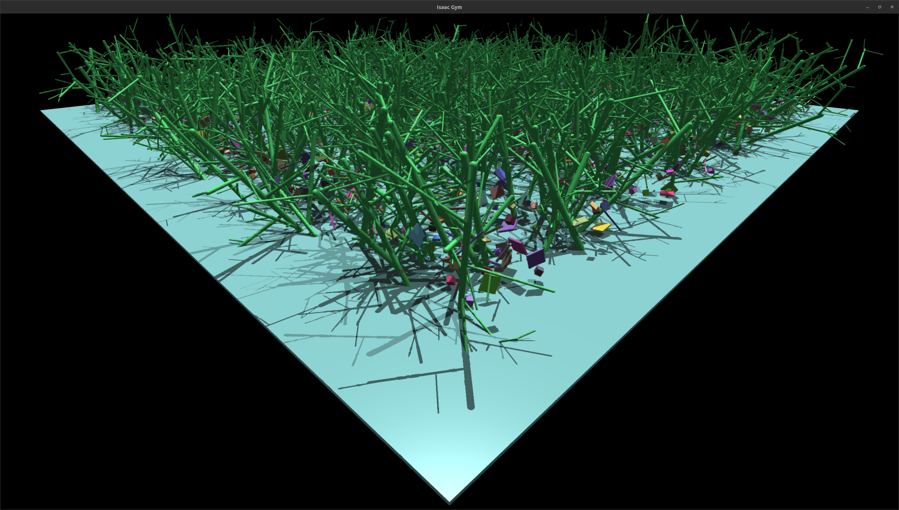

Customizing the Simulator
Custom Physics Parameters¶
Different physics engine + viewer window combination parameters can be set in the sim class with another class name. This configuration can be registered with to be used in the simulation either in the __init__.py file in the relevant folder, or at runtime in the code by the following command:
Custom simulation parameters
from aerial_gym.registry.sim_registry import sim_registry
from aerial_gym.simulation.sim_params import BaseSimParams
class CustomSimParamsFallingForwards(BaseSimParams):
class sim(BaseSimConfig.sim):
dt = 0.01 # Custom Parameter
gravity = [+1.0, 0.0, 0.0]
# register your custom class here
sim_registry.register_sim_params("falling_forwards", CustomSimParamsFallingForwards)
### use the registered class further in the code to spawn a simulation ###
A config file can then be created that specifies that the simulation should use the custom parameters. The simulator (Isaac Gym instance within the code) will have to be restarted for the changes to take effect.
The physics simulation parameters can be registered via the sim_registry
- in the file
sim/__init__.pyfor it to be named and identifiable throughout the simulation run, or - at runtime in the code by the following command:
The simulation instance needs to be restarted for the parameters to take effect
Custom Environments¶
We provide an example environment that has milti-linked parametric tree objects in the environment to simulate a forest.
More objects can be added to the environment by setting their asset properties and creating an environment file for that environment that specifies which assets are to be included in the environment.
In this manner, it is:
- Possible to reuse the same (set of) assets across environments
- Easy to compose multiple environments with same or varying assets with different parameters for randomization.
- Include your own assets and create custom environments for specific tasks.
The configuration file for the forest environment
from aerial_gym.config.env_config.env_object_config import EnvObjectConfig
import numpy as np
class ForestEnvCfg(EnvObjectConfig):
class env:
num_envs = 64
num_env_actions = 4
env_spacing = 5.0 # not used with heightfields/trimeshes
num_physics_steps_per_env_step_mean = 10 # number of steps between camera renders mean
num_physics_steps_per_env_step_std = 0 # number of steps between camera renders std
render_viewer_every_n_steps = 1 # render the viewer every n steps
reset_on_collision = (
True # reset environment when contact force on quadrotor is above a threshold
)
collision_force_threshold = 0.005 # collision force threshold [N]
create_ground_plane = False # create a ground plane
sample_timestep_for_latency = True # sample the timestep for the latency noise
perturb_observations = True
keep_same_env_for_num_episodes = 1
use_warp = True
lower_bound_min = [-5.0, -5.0, -1.0] # lower bound for the environment space
lower_bound_max = [-5.0, -5.0, -1.0] # lower bound for the environment space
upper_bound_min = [5.0, 5.0, 3.0] # upper bound for the environment space
upper_bound_max = [5.0, 5.0, 3.0] # upper bound for the environment space
class env_config:
include_asset_type = {
"trees": True,
"objects": True,
"bottom_wall": True,
}
# maps the above names to the classes defining the assets. They can be enabled and disabled above in include_asset_type
asset_type_to_dict_map = {
"trees": EnvObjectConfig.tree_asset_params,
"objects": EnvObjectConfig.object_asset_params,
"bottom_wall": EnvObjectConfig.bottom_wall,
}
The environment appears as shown below:

Custom Controllers¶
Additional controllers can be added as per the need of the users for their preferred robot configuration. We provide an example of a non-standard controller that tracks a velocity and steering angle command in the controller folder. The vehicle velocity is expressed in the vehicle frame and the steering angle is measured w.r.t the world frame. The controller can be registered in the __init__.py file in the controller folder, or at runtime in the code. To better show the integration with our existing code, we exploit the functionality provided by the base_lee_controller.py class, however the users are not required to adhere to this and can write their own controller structures as per their requirements. We also modify the controller from the base_lee_controller.py file to show the control of a fully actuated platform with 8 motors and use it to control a model of an underwater vehicle. We also provide an example file to simulate this controller with an underwater robot model.
FullyActuatedController code
class FullyActuatedController(BaseLeeController):
def __init__(self, config, num_envs, device):
super().__init__(config, num_envs, device)
def init_tensors(self, global_tensor_dict=None):
super().init_tensors(global_tensor_dict)
def update(self, command_actions):
"""
Fully actuated controller. Input is in the form of desired position and orientation.
command_actions = [p_x, p_y, p_z, qx, qy, qz, qw]
Position setpoint is in the world frame
Orientation reference is w.r.t world frame
"""
self.reset_commands()
command_actions[:, 3:7] = normalize(command_actions[:, 3:7])
self.accel[:] = self.compute_acceleration(command_actions[:, 0:3], torch.zeros_like(command_actions[:, 0:3]))
forces = self.mass * (self.accel - self.gravity)
self.wrench_command[:, 0:3] = quat_rotate_inverse(
self.robot_orientation, forces
)
self.desired_quat[:] = command_actions[:, 3:]
self.wrench_command[:, 3:6] = self.compute_body_torque(
self.desired_quat, torch.zeros_like(command_actions[:, 0:3])
)
return self.wrench_command
The controller can be registered via the controller_registry
- in the file
controller/__init__.pyfor it to be named and identifiable throughout the simulation run, or - at runtime in the code by the following command:
Custom Robots¶
We support addition of custom robot configurations and custom control methodologies in the simulator. An example of an arbitrary robot configuration with 8 motors is provided with the simulator. The robot configuration, if differing significantly, can have its own python class to control the robot links, coontrollers, and utilize the sensors that are onboard the robot. The robot configuration can be registered in the __init__.py file in the robot folder, or at runtime in the code. Moreover, the current file structure allows for us to reuse the same robot class with an appropriate configuration file.
In our case, we use the base_quadrotor.py class alongside with an appropriate configuration file for the robot. For example, for the arbitrary robot model, we use the following configuration file:
Configuration file for arbitrary robot model
# asset parameters for the simulator above
class control_allocator_config:
num_motors = 8
force_application_level = "motor_link"
# "motor_link" or "root_link" to apply forces at the root link or at the individual motor links
motor_mask = [1 + 8 + i for i in range(0, 8)]
motor_directions = [1, -1, 1, -1, 1, -1, 1, -1]
allocation_matrix = [[ 5.55111512e-17, -3.21393805e-01, -4.54519478e-01, -3.42020143e-01,
9.69846310e-01, 3.42020143e-01, 8.66025404e-01, -7.54406507e-01],
[ 1.00000000e+00, -3.42020143e-01, -7.07106781e-01, 0.00000000e+00,
-1.73648178e-01, 9.39692621e-01, 5.00000000e-01, -1.73648178e-01],
[ 1.66533454e-16, -8.83022222e-01, 5.41675220e-01, 9.39692621e-01,
1.71010072e-01, 1.11022302e-16, 1.11022302e-16, 6.33022222e-01],
[ 1.75000000e-01, 1.23788742e-01, -5.69783368e-02, 1.34977168e-01,
3.36959042e-02, -2.66534135e-01, -7.88397460e-02, -2.06893989e-02],
[ 1.00000000e-02, 2.78845133e-01, -4.32852308e-02, -2.72061766e-01,
-1.97793856e-01, 8.63687139e-02, 1.56554446e-01, -1.71261290e-01],
[ 2.82487373e-01, -1.41735490e-01, -8.58541103e-02, 3.84858939e-02,
-3.33468026e-01, 8.36741468e-02, 8.46777988e-03, -8.74336259e-02]]
# here, the allocation matrix is computed (by the user) to from the URDF files of the robot
# to map the effect of motor forces on the net force and torque acting on the robot.
class motor_model_config:
motor_time_constant_min = 0.01
motor_time_constant_max = 0.03
max_thrust = 5.0
min_thrust = -5.0
max_thrust_rate = 100.0
thrust_to_torque_ratio = 0.01 # thrust to torque ratio is related to inertia matrix dont change
# other parameters for the robot below
Additionally, we also provide an example of control of an underwater BlueROV robot model with 8 motors and a custom controller for the fully-actutated platform. We provide an example file showing full-state tracking of the robot with the controller.

Custom Tasks¶
You can refer to the example file in tasks/custom_task and implement your own task specification as shown here:
Custom Task Class Definition
class CustomTask(BaseTask):
def __init__(self, task_config):
super().__init__(task_config)
self.device = self.task_config.device
# write your own implementation herer
self.sim_env = SimBuilder().build_env(
sim_name=self.task_config.sim_name,
env_name=self.task_config.env_name,
robot_name=self.task_config.robot_name,
args=self.task_config.args,
device=self.device,
)
# Implement something here that is relevant to your task
self.task_obs = {
"observations": torch.zeros(
(self.sim_env.num_envs, self.task_config.observation_space_dim),
device=self.device,
requires_grad=False,
),
"priviliged_obs": torch.zeros(
(self.sim_env.num_envs, self.task_config.privileged_observation_space_dim),
device=self.device,
requires_grad=False,
),
"collisions": torch.zeros(
(self.sim_env.num_envs, 1), device=self.device, requires_grad=False
),
"rewards": torch.zeros(
(self.sim_env.num_envs, 1), device=self.device, requires_grad=False
),
}
def close(self):
self.sim_env.delete_env()
def reset(self):
# write your implementation here
return None
def reset_idx(self, env_ids):
# write your implementation here
return
def render(self):
return self.sim_env.render()
def step(self, actions):
# this uses the action, gets observations
# calculates rewards, returns tuples
# In this case, the episodes that are terminated need to be
# first reset, and the first obseration of the new episode
# needs to be returned.
# repace this with something that is relevant to your task
self.sim_env.step(actions=actions)
return None # replace this with something relevant to your task
@torch.jit.script
def compute_reward(
pos_error, crashes, action, prev_action, curriculum_level_multiplier, parameter_dict
):
# something here
return 0
The task must be registered via the task-registry
- in the file
task/__init__.pyfor it to be named and identifiable throughout the simulation run, or - at runtime in the code by the following command:
Custom Sensors¶
Exposing sensor parameters for the ray-casting sensor allows for them to be individually customized to simulate an exteroceptive sensor by the user. We provide an example of a hemispherical LiDAR sensor based on Ouster OSDome LiDAR.
The parameters can be configured as shown here
from aerial_gym.config.sensor_config.lidar_config.base_lidar_config import BaseLidarConfig
class OSDome_64_Config(BaseLidarConfig):
# keep everything pretty much the same and change the number of vertical rays
height = 64
width = 512
horizontal_fov_deg_min = -180
horizontal_fov_deg_max = 180
vertical_fov_deg_min = 0
vertical_fov_deg_max = 90
max_range = 20.0
min_range = 0.5
return_pointcloud= False
segmentation_camera = True
# randomize placement of the sensor
randomize_placement = False
min_translation = [0.0, 0.0, 0.0]
max_translation = [0.0, 0.0, 0.0]
# example of a front-mounted dome lidar
min_euler_rotation_deg = [0.0, 0.0, 0.0]
max_euler_rotation_deg = [0.0, 0.0, 0.0]
class sensor_noise:
enable_sensor_noise = False
pixel_dropout_prob = 0.01
pixel_std_dev_multiplier = 0.01
The data from the hemispherical LiDAR is projected into a range and segmented image and appears as shown below: